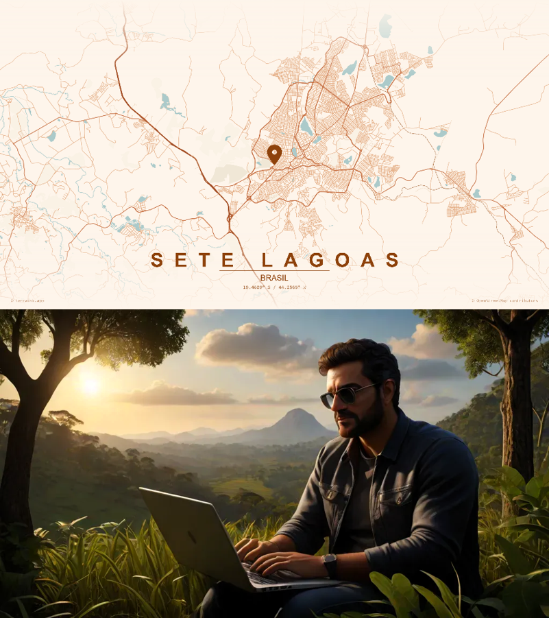
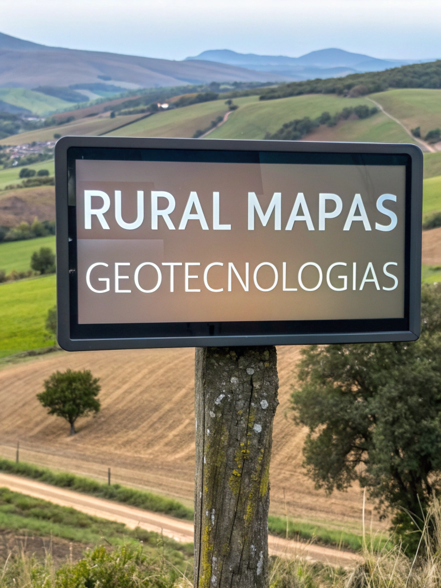
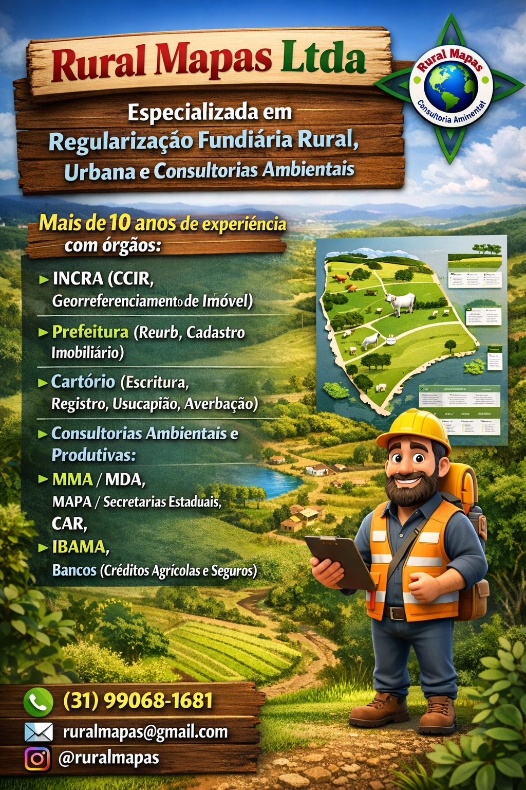
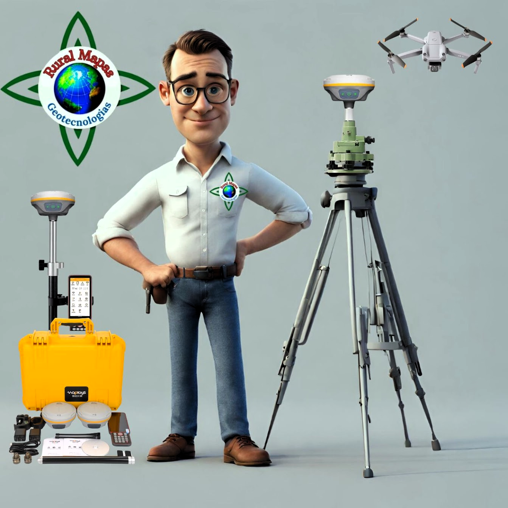
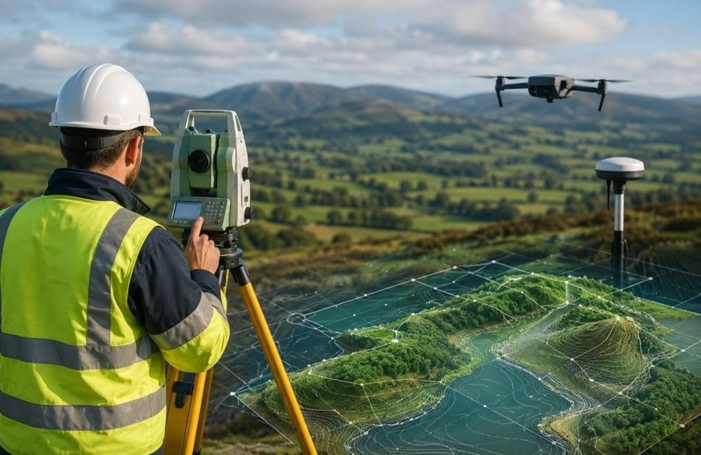
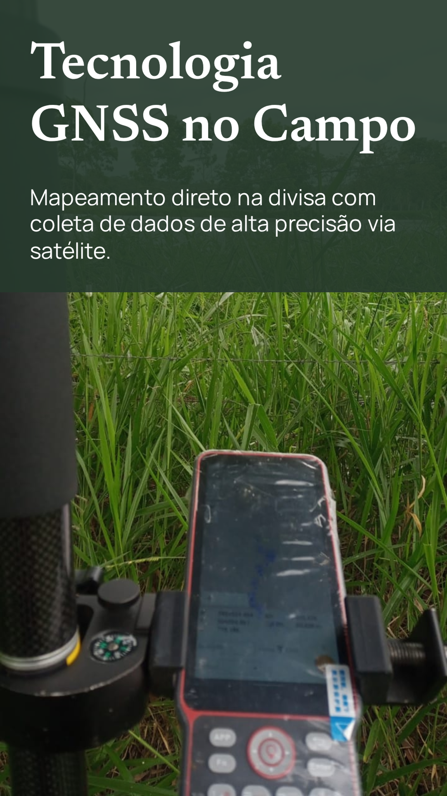

Georreferenciamento e regularização
Preparação técnica para imóveis rurais, perímetros, matrículas e documentos cartográficos com apoio de dados geoespaciais.
A Rural Mapas oferece serviços de topografia, georreferenciamento e geotecnologias para imóveis rurais e urbanos. Com profissionais credenciados junto ao INCRA e equipe técnica especializada, entregamos informações geográficas com precisão para projetos e propriedades.
Precisão técnica e informação geográfica para apoiar propriedades, projetos e decisões.
A Rural Mapas é uma empresa brasileira que oferece serviços de topografia, georreferenciamento e geotecnologias. Atende proprietários rurais, produtores agrícolas, investidores e empresas que necessitam de dados confiáveis para sua área.
Os serviços são realizados por profissionais credenciados junto ao INCRA, conforme requisitos e normas aplicáveis a cada trabalho, com uso de equipamentos de precisão e práticas técnicas adequadas.
Sediada em Sete Lagoas–MG, a Rural Mapas atende a região e presta serviços em outras localidades do Brasil, conforme as características e necessidades de cada projeto.
Levantamentos e produtos geoespaciais para propriedades, obras, certificações e gestão territorial.
Preparação técnica para imóveis rurais, perímetros, matrículas e documentos cartográficos com apoio de dados geoespaciais.
Levantamentos de área com precisão, locação e apoio para projetos rurais, urbanos e industriais.
Produção de mapas, modelos e representações do território para análise, projetos e acompanhamento.
Tratamento de dados espaciais, imagens, bases e informações para suporte técnico e tomada de decisão.
Atendimento próximo, escopo definido e soluções adequadas às características de cada projeto.
Serviços de georreferenciamento rural e elaboração de peças técnicas com respaldo profissional.
Utilização de ferramentas e tecnologias suficientes para levantamentos, locações e geoprocessamento.
Atendimento em Sete Lagoas e região, com possibilidade de atuação em outras localidades do Brasil.
Exemplos de projetos, áreas e situações em que a Rural Mapas atua.






Solicite informações sobre topografia, georreferenciamento, mapeamento e serviços técnicos.
Sete Lagoas – MG